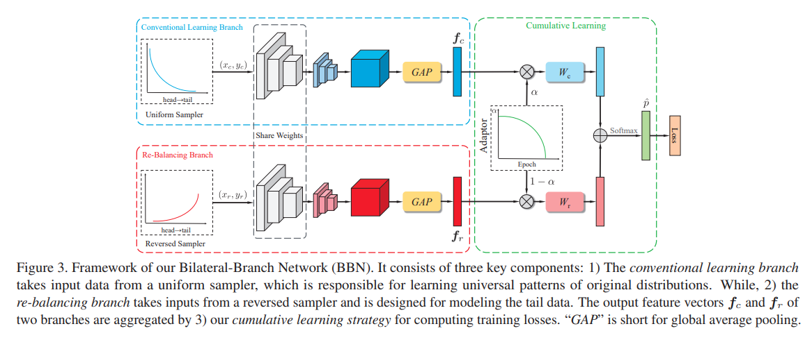
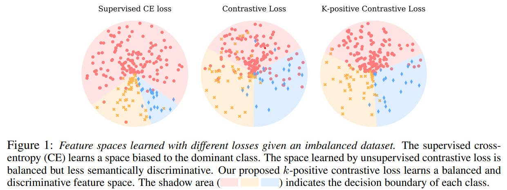

Classification
-
Decoupling Representation and Classifier for Long-Tailed Recognition
BibTex
url=https://iclr.cc/virtual_2020/poster_r1gRTCVFvB.html
@inproceedings{ kang2020decoupling,
title={Decoupling Representation and Classifier for Long-Tailed Recognition},
author={Kang, Bingyi and Xie, Saining and Rohrbach, Marcus and Yan, Zhicheng and Gordo, Albert and Feng, Jiashi and Kalantidis, Yannis},
booktitle={International Conference on Learning Representations},
year={2020}}
Summary
In this paper, the authors are tackling the problem of classification on long-tail datasets. The authors propose decoupling representation learning and classifier learning for long-tail data distributions unlike previous methods which would train a model jointly for both representation and classifier learning. One advantage of decoupling that the autors point out is the ability to use different sampling techniques for the stages and see which sample technique benefit best each stage. To that end, The authors setup a Convolutional Neural Network which is composed of a backbone for representation learning and a classifier head, either linear model or a MultiLayer Perceptron, for classification. They then employ various sampling techniques for both parts independently. For learning representations, the sampling techniques are
- Instance balanced sampling: each training example has equal probability of being sampled. As a results classes with greater number of samples dominate the training process.
- Class-balanced sampling: it occurs in two steps where a class is uniformly selected from the set of all classes and then the sample is uniformly selected from the selected class. This sampling technique is used to balance the number of samples per class.
- Square-root sampling: where the Square-root of the number of examples is considered instead of the number of examples itself.
- Progressively balanced sampling: it's a mix of Instance balanced sampling and Class balanced sampling. Using the iteration number (epoch number), the sampling can start with Instance balanced sampling and then gradually shift to Class balanced sampling. Unfortunately, this technique requires the total number of iterations to be known ahead of time.
For classifier learning, the approaches are
- cRT: Classifier Re-training where the classifier head is retrained on class-balanced sampling
- Nearest Class Mean Cluster: where a new example is classified based on its proximity to the nearest class cluster mean. This technique rely more heavily on the quality of the representation learning.
- tau normalized classifier: where the norms of the classifier weights associated with each class are normalized to to prevent the majority classes' weight to grow dominant as they normally would
- LWS: Learnable Weights Scaling takes that step further and makes to normalization coefficient of the class associated weights learnable
After the test on few long-tail datasets, the authors show that data imbalance is not an issues for learning high quality representations. Moreover, representation learning is not affected by tail distribution but rather takes advantage of the instance-balanced distribution. But classifier learning is affected by the tail distribution and therefore needs to be balanced. The best coupling the found was instance-balanced sampling for representation learning and some balancing for classifier learning (cRT, tau-normalized, LWS).Problem imbalanced input distribution cause the model to be biased towards the majority classes and therefore perform poorly on the minority classes.
Solution, Ideas and Why The authors main approach is to decouple the representation learning and classifier learning. That way, a different sampling technique can be applied to the representation learning and the classifier learning. The authors show that representation learning is not affected by tail distribution and therefore can leverage all data points. It's actually best for the representation learning to use instance-balanced sampling. The classifier can then be adapted to the imbalance of the data through few method that the author compared. The ones that work the best are cRT (classifier retraining where the classifier is retrained on a class-balanced sampling), thau-normalized (where the classifier's weights are normalized inversely proportional to the class frequency), and LWS (learnable weight scaling where the thau normalized factor is learned).
Images


-
BBN: Bilateral-Branch Network with Cumulative Learning for Long-Tailed Visual Recognition
BibTex
url= https://openaccess.thecvf.com/content_CVPR_2020/papers/Zhou_BBN_Bilateral-Branch_Network_With_Cumulative_Learning_for_Long-Tailed_Visual_Recognition_CVPR_2020_paper.pdf
@inproceedings{ zhou2020bbn,
title={Bbn: Bilateral-branch network with cumulative learning for long-tailed visual recognition},
author={Zhou, Boyan and Cui, Quan and Wei, Xiu-Shen and Chen, Zhao-Min},
booktitle={Proceedings of the IEEE/CVF conference on computer vision and pattern recognition},
year={2020}}
Summary
In this paper, the authors are tackling the problem of classification on long-tail data distributions. They observed that balancing methods (when performed jointly) promote minority classes at the expense of the majority classes. They show through their experiments that for representation learning, using the original long-tail distribution has the least error rate overall, while for classifier learning, using a balanced distribution has the least error rate overall. In an effort to reconcile the two, they propose a bilateral-branch network (BBN) that has two branches: one branch called the convential branch that cares about learning the original distribution for strong representation learning, and another branch called the re-balancing branch that cares about learning a reverse distribution (minority classes are more likely to be sampled) for strong classifier learning. It's crucial to note that both branches share the same weights for the representation learning backbone. Both branches would then be combined through a cumulative learning strategy. The cumulative learning strategy features two classifier from both branches. A classifier from the conventional branch to classify majority classes and a classifier from the re-balancing branch to classify minority classes. The cumulative learning strategy is a weighted sum of the two branches' outputs. That weight is modulated by the iteration number and follows a parabolic decay. Early in the training, more weight is given to the conventional branch and much later in the training, more weight is given to the re-balancing branch. The authors also propose a weighted cross-entropy loss that accompany the cumulative learning strategy. During inference, both branches are considered equally and the final prediction is the average of the two branches' predictions. Their results show that their soft decoupling by transitioning from conventional learning to re-balancing learning is better than technique prior. The norms of the classifier weights are also shown to be more balanced, with a lower standard deviation, than the prior techniques.
Problem imbalanced input distribution cause the classifier to be biased towards majority classes even though the feature extractor is performant under the original distribution.
Solution, Ideas and Why
Images
2 branches are used: one branch for representation learning and another branch for classifier learning. The representation learning branch is trained on the original distribution while the classifier learning branch is trained on a reverse distribution. The two branches are then combined through a cumulative learning strategy where the weight of each branch is modulated by the iteration number according to a curriculum.
 -
Balanced Meta-Softmax for Long-Tailed Visual Recognition
BibTex
url= https://proceedings.neurips.cc/paper_files/paper/2020/file/2ba61cc3a8f44143e1f2f13b2b729ab3-Paper.pdf
@inproceedings{ ren2020balsoftmax,
title={Balanced Meta-Softmax for Long-Tailed Visual Recognition},
author={Ren, Jiawei and Yu, Cunjun and sheng, shunan and Ma, Xiao and Zhao, Haiyu and Yi, Shuai and Li, hongsheng},
booktitle={Advances in Neural Information Processing Systems},
year={2020}}
Summary
The authors are tackling the problem of classification on long-tail data distributions. They observed that the softmax function is not well suited for long-tail data distributions as it gives bias gradient estimates under long-tail data distributions. They therefore propose a balanced softmax function that is only used during training while the conventional softmax function is used during testing or inference (in deployment). Utilizing the bayesian definition of the softmax function, they propose a balanced softmax function that is softmax with the number of samples in each class a coefficient to the exponential. This formulation of a balanced softmax during training forces the training network to output larger logits for minority classes. However, paired with a class balanced strategy, the authors observed that minority classes were overbalanced. They needed a new sampling strategy that would work with the balanced softmax function. The proposed a meta sampler, a model that could learn that optimal sampling strategy for the balanced softmax function during training. The training routine would be in two level where the first level would be the training of the meta sampler in the inner training loop and then the training of the network in the outer training loop. The algorithmic steps are as follows:
- Obtain a minibach sampled with the meta sampler from the training set and use that minibach to train a surrogate network. The surrogate network is used there to ensure the real network can be trained with a better batch from the meta sampler later. This step is done once per outer loop iteration
- A loss for the surrogate network is computed on a class balanced dataset with softmax and cross entropy and the value of the loss was used to update the meta sampler. This update is performed a few times per outer loop iteration.
- The improved sampled is then used to sample a new batch for the real network to train on. This step is done once per outer loop iteration.
Problem output logits are not balanced for long-tail data distributions, majority classes have larger logits than minority classes. This may lead to poor performance on minority classes.
Solution, Ideas and Why The authors propose a balanced softmax function that is only used during training. The balanced softmax function is softmax with the number of samples in each class a coefficient to the exponential. This formulation of a balanced softmax during training forces the training network to output larger logits for minority classes. However, paired with a class balanced strategy, the authors observed that minority classes were overbalanced. A meta sampler is proposed to learn the optimal sampling strategy for the balanced softmax function during training. The training routine would be in two level where the first level would be the training of the meta sampler in the inner training loop and then the training of the network in the outer training loop.
Images
-
Exploring balanced feature spaces for representation learning
BibTex
url=https://openreview.net/pdf?id=OqtLIabPTit
@inproceedings{ kang2021kcl,
title={Exploring balanced feature spaces for representation learning},
author={Kang, Bingyi and Li, Yu and Xie, Sa and Yuan, Zehuan and Feng, Jiashi},
booktitle={International Conference on Learning Representations},
year={2021}}
Summary
The authors are tackling the issue of imbalance feature space for long-tail data distributions. They observed that the feature space is imbalanced under long-tail data distributions which leads to poor decision boundaries for minority classes when using Supervised Cross Entropy loss. They observed that with contrastive loss, the feature space is balanced. They therefore propose a supervised contrastive learning method that uses the labels of the data to learn a representation space where similar samples are close to each other and dissimilar samples are far from each other. The supervised contrastive loss use class label to draw samples from the same class close to each other and samples from different classes far from each other. The noticed however that, with a large number of samples, the majority classes would dominate the learning process. they then proposed K contrastive learning (KCL) that limits the number of positive samples from each class to K to prevent the majority classes from dominating the learning process with more samples. They showed their methods also works on other tasks such as object detection and semantic segmentation. a proposed a balancedness metric to measure the balance of the feature space.
Problem under long tail distribution, the feature space is imbalanced which leads to poor decision boundaries for minority classes.
Solution, Ideas and Why supervised contrastive learning to learn a balanced feature space. Supervised contrastive learning is a contrastive learning method that uses the labels of the data to learn a representation space where similar samples are close to each other and dissimilar samples are far from each other. K contrastive learning (KCL) is a supervised contrastive learning method that the limit of the number of samples from each class to K to prevent the majority classes from dominating the learning process with more samples.
Images
 -
Long-tail learning via logit adjustment
BibTex
url=https://openreview.net/pdf?id=37nvvqkCo5
@inproceedings{ menon2021logitadjustment,
title={Long-tail learning via logit adjustment},
author={Menon, Aditya Krishna and Jayasumana, Sadeep and Rawat, Ankit Singh and Jain, Himanshu and Veit, Andreas and Kumar, Sanjiv},
booktitle={International Conference on Learning Representations},
year={2021}}
Summary
The authors propose a framework to generalize on the logit adjustment methods. They observed that previous methods focused on scaling the logits and assumed the target distribution is uniform. They propose a logit adjustment framework that can be implemented post hoc to any existing model where an adjustment term based on the prior distribution of the target dataset is added to the logits. It can also be implemented as a loss function. The loss function would be adjusted based on added terms that would take into account the known prior of the target dataset. The authors showed that their method indeed was a general formulation of previous methods and that it outperformed previous methods on benchmark datasets.
Problem logits are not balanced for long-tail data distributions, majority classes have larger logits than minority classes. furthermore, previous attempts at adjusting logits focus on scaling the logits and assumed the target distribution is uniform
Solution, Ideas and Why a logit adjustment framework that can be implemented post hoc to any existing model where an adjustment term based on the prior distribution of the target dataset is added to the logits. It can also be implemented as a loss function.
Images
-
Long-tailed Recognition by Routing Diverse Distribution-Aware Experts
BibTex
url=https://openreview.net/pdf?id=D9I3drBz4UC
@inproceedings{ wang2020ride,
title={Long-tailed Recognition by Routing Diverse Distribution-Aware Experts},
author={Wang, Xudong and Lian, Long and Miao, Zhongqi and Liu, Ziwei and Yu, Stella},
booktitle={International Conference on Learning Representations},
year={2020}}
Summary
This paper demonstrate that prior methods that tackle the long-tail problem by focusing on the balacing the classifier decrease tail bias at the expense of increased head bias, and increased variance for all classes. They tackle this issue with an ensemble of experts that are trained on balanced data and to be diverse ie their posteriors distribution are divergent. To make sure not too many experts are used which would take too much compute, they use a router that predicts whether to involve additional experts in the classification. The router network is trained to route to the next expert if the current expert incorrectly classify but some kth expert correctly classify the sample. They optionally apply self distillation to distill many experts into fewer experts.
Problem imbalance classification and focusing reduce tail bias at expense of increased head bias, increase variance for all classes
Solution, Ideas and Why use multiple experts to reduce variance, and add loss term to increase experts diversity and reduce bias. learne router to predict whether to involve additional experts in the classification
Images

-
Contrastive Learning based Hybrid Networks for Long-Tailed Image Classification
BibTex
url= https://openaccess.thecvf.com/content/CVPR2021/papers/Wang_Contrastive_Learning_Based_Hybrid_Networks_for_Long-Tailed_Image_Classification_CVPR_2021_paper.pdf
@inproceedings{ wang2021hybridsc,
title={Contrastive learning based hybrid networks for long-tailed image classification},
author={Wang, Peng and Han, Kai and Wei, Xiu-Shen and Zhang, Lei and Wang, Lei},
booktitle={Proceedings of the IEEE/CVF conference on computer vision and pattern recognition},
year={2021}}
Summary
This paper tackle imbalance classification and the memory inefficiency observed in current supervised contrastive learning methods where they require large amount of negative samples. To tackle this issues, they propse a 2 branch network with a shared backbone. One branch is trained on imbalanced data samples with an MLP to produce embedding based on supervised contrastive loss that leverages class prototypes as positive and negative samples. The other branch is trained on balanced data samples with a linear layer to produce good decision boundaries for the features based on supervised cross entropy loss. The 2 branches are trained in a curriculum fashion with alpha controlling the balance between the 2 branches. Alpha decays as linearly with the epochs, indicating the training starts first with the feature learning branch and then gradually shift to the classifier learning branch. More than one prototype per class can be used to improve the performance of the feature learning branch (still fewer in number compared to negative samples needed). The prototypes are learned.
Problem memory ineffficient feature learning
Solution, Ideas and Why use class prototypes in supervised contrastive loss. 2 branches and curriculum training from one to the other
Images

-
Disentangling Label Distribution for Long-tailed Visual Recognition
BibTex
url= https://openaccess.thecvf.com/content/CVPR2021/papers/Hong_Disentangling_Label_Distribution_for_Long-Tailed_Visual_Recognition_CVPR_2021_paper.pdf
@inproceedings{ hong2021disentangling,
title={Disentangling label distribution for long-tailed visual recognition},
author={Hong, Youngkyu and Han, Seungju and Choi, Kwanghee and Seo, Seokjun and Kim, Beomsu and Chang, Buru},
booktitle={Proceedings of the IEEE/CVF conference on computer vision and pattern recognition},
year={2021}}
Summary
To tackle imbalance classification, the authors notice that previous methods focus on assumed uniform target distribution. They propose to not assume the target distribution is uniform but still known. Based on that, they reframe the problem as a distribution shift problem and disentangle the source distribution and logits by having logits represent likehood over evidence instead of posterior. Knowning the test distribution they can obtain a balanced output posterior by using the test distrubution prior and the network logits. They add a regulariser term to explicitly disentangle logits from source label distribution and use known target label distribution to post compensate.
Problem target distrubution may not be assumed uniform like many works do
Solution, Ideas and Why frame LT as distribution shift, disentangle source distribution and logits by having logits represent likehood over evidence instead of posterior. add a regulariser term to explicitly disentangle logits from source label distribution and use known target label distribution to post compensate
Images
-
Distribution Alignment: A Unified Framework for Long-tail Visual Recognition
BibTex
url= https://openaccess.thecvf.com/content/CVPR2021/papers/Zhang_Distribution_Alignment_A_Unified_Framework_for_Long-Tail_Visual_Recognition_CVPR_2021_paper.pdf
@inproceedings{ zhang2021disalign,
title={Distribution alignment: A unified framework for long-tail visual recognition},
author={Zhang, Songyang and Li, Zeming and Yan, Shipeng and He, Xuming and Sun, Jian},
booktitle={Proceedings of the IEEE/CVF conference on computer vision and pattern recognition},
year={2021}}
Summary
This paper is tackling the problem of imbalance classification. They first start by setting up the upper bound of the classification by including the test set in the dataset, making the test set known and observed that the upper bound is not achieved by current methods. They then propose a unified framework that learns a balanced network in 2 stages. First they learn an adaptive calibration function that would linearly project frozen classifier logits to a balanced space. To determine how much of calibration to use on the logit, they use a linear function with 2 learnable parameters that determine how much of the calibrated logits to use or the original logits based on the input data sample. This method effectively achieve class and instance level calibration of logits, as well as affine transformation of logits. They frame the problem as a distribution shift between training distribution (imbalanced) and target distribution (balanced), and minimize the KL divergence between the 2 distributions, with test distribution being the target distribution. The target distribution they conceived is a reweighted version of the training distribution. The reweighting is done by using the inverse of the class frequency so rare classes are weighted more than frequent classes.
Problem imbalanced output logits
Solution, Ideas and Why Learn affine logits adjustment at both class and instance levels. Adjuste target posterior based on class weighting for logits to approximate.
Images
-
Improving Calibration for Long-Tailed Recognition
BibTex
url= https://openaccess.thecvf.com/content/CVPR2021/papers/Zhong_Improving_Calibration_for_Long-Tailed_Recognition_CVPR_2021_paper.pdf
@inproceedings{ zhong2021mislas,
title={Improving calibration for long-tailed recognition},
author={Zhong, Zhisheng and Cui, Jiequan and Liu, Shu and Jia, Jiaya},
booktitle={Proceedings of the IEEE/CVF conference on computer vision and pattern recognition},
year={2021}}
Summary
The authors are tackling the problem of imbalance classification. They observed that current methods have poor calibration of their output logits and are overconfident in their predictions. Usually by measuring the true accuracy against the predicted accuracy, the true accuracy is lower than the predicted accuracy. They also measure the ECE or expected calibration error and observed that the ECE is high for current methods (lower being better). First they propose to use Mixup to generate synthetic samples for the rare classes. Then they also propose label smoothing of the classifier logits by artificially deducting some epsilon value on the correct class logit and redistributing that value to the other classes uniformally. Epsilon is obtained as a function of the class sample count with some normalization by the difference between the maximum and minimum class sample counts. To fit the label aware smoothing objective, they combine cRT and LWS into classifier update function. It can either scale the classifier logits (LWS) or apply a learned update on the classifier weights (cRT) based on the retention factor r. For better normalization on stage 2, they update the running mean and variance in batch norm but fix the alpha and beta parameters in stage 2 (classifier update stage).
Problem miss-calibration of output logits which leads to over-confidence in majority classes, where the true accuracy is lower than the predicted accuracy.
Solution, Ideas and Why adjust target posterior as a function of class frequency. use mixup to generate synthetic samples, and use a combination of LWS and cRT to calibrate the output logits.
Images
-
RSG: A Simple but Effective Module for Learning Imbalanced Datasets
BibTex
url= https://openaccess.thecvf.com/content/CVPR2021/papers/Wang_RSG_A_Simple_but_Effective_Module_for_Learning_Imbalanced_Datasets_CVPR_2021_paper.pdf
@inproceedings{ wang2021rsg,
title={Rsg: A simple but effective module for learning imbalanced datasets},
author={Wang, Jianfeng and Lukasiewicz, Thomas and Hu, Xiaolin and Cai, Jianfei and Xu, Zhenghua},
booktitle={Proceedings of the IEEE/CVF Conference on Computer Vision and Pattern Recognition},
year={2021}}
Summary
In this paper, the authors propose a simple but effective module called RSG to address the long-tail problem. RSG works by generating new samples for the rare classes. RSG uses variation information among the real samples from the frequent classes to generate new samples for the rare classes. RSG is composed of 3 modules:
- Center estimation module: to find class feature centers
- Contrastive module: to check if 2 feature maps are from the same class
- Vector Transformation module: generate new rare samples with displacement vectors
Problem Current methods on long-tail recognition lacks good generalization because they are not trained end to end, and variation information used to produce new synthetic data sample are not class-irrelevent.
Solution, Ideas and Why
- Rare-class sample generator which can be trained end to end
- Assuming class samples follow a multinomial distribution so there can be center(s) for each class
- Feature displacement indicates the displacement of a sample to its corresponding center in a class and should not contain class-relevent information
- Adding feature displacement vector to rare-class samples instead of centers to improve the decision boundary
- Transformed freq class displacement vector should be collinear to rare-class displacement vector of the sample to be applied to
-
Balanced Contrastive Learning for Long-Tailed Visual Recognition
BibTex
url= https://openaccess.thecvf.com/content/CVPR2022/papers/Zhu_Balanced_Contrastive_Learning_for_Long-Tailed_Visual_Recognition_CVPR_2022_paper.pdf
@inproceedings{ zhu2022bcl,
title={Balanced contrastive learning for long-tailed visual recognition},
author={Zhu, Jianggang and Wang, Zheng and Chen, Jingjing and Chen, Yi-Ping Phoebe and Jiang, Yu-Gang},
booktitle={Proceedings of the IEEE/CVF Conference on Computer Vision and Pattern Recognition},
year={2022}}
Summary
In this paper, the authors investigate the geomtric structure formed by representation vectors of classes and the class prototypes. They observed that past methods fail to form regular simplex geometries in the feature space, which is crucial for the generalization of the learned representations. A regular simplex geometry is has 3 crucial characteristics
- the mean of all class prototypes should be the origin of the representation space
- the class prototypes should be at a radius distance from the origin
- the class prototypes should be vectors of which the dot product with one another can be calculated
Problem Current approaches to long-tailed visual recognition (LTVR) fail to form regular simplex geometries in the feature space, which is crucial for the generalization of the learned representations.
Solution, Ideas and Why
- balanced feature space has a regular simplex geometry
- class averaging reduces the effect head classes dominating the gradients in optimization
- class component introduces class prototypes in all minibatches so that all classes contribute to the optimization stably
- logit adjustment for classifier logits using the imbalanced class priors
- class prototypes are obtained from the MLP projection of the class specific weights of the linear classifier in the classification branch
-
Long-Tailed Recognition via Weight Balancing
BibTex
url= https://openaccess.thecvf.com/content/CVPR2022/papers/Alshammari_Long-Tailed_Recognition_via_Weight_Balancing_CVPR_2022_paper.pdf
@inproceedings{alshammari2022weightbal,
title={Long-tailed recognition via weight balancing},
author={Alshammari, Shaden and Wang, Yu-Xiong and Ramanan, Deva and Kong, Shu},
booktitle={Proceedings of the IEEE/CVF Conference on Computer Vision and Pattern Recognition},
year={2022}}
Summary
This paper is tackling the problem of imbalance classification. They observed that imbalanced data cause the norm of the weights to be larger for the head classes than the tail classes. This is because the head classes have more examples than the tail classes. Ideally the weights should be balanced so that the norm of the weights are the same for all classes. To tackle this issue, they propose a 2 stage training framework. In the first stage, they train the classifier with a weight decay term that penalizes the norm of the weights. In the first they use CE loss with a weight decay term. In the second stage, they train the classifier with weight decay and a maxnorm term that gives an upper bound to the weight norms. The maxnorm term is obtained by using the lagrangian multiplier to convert the original constrained optimization problem into an unconstrained optimization problem. The new object is a minmax objective when the original loss is minimized by the classifier weights and the maxnorm term is maximized by the KKT multiplier gamma. Intuitively, as gamma grows larger, the second term dominates the objective, forcing the learned weights to be less than the upper bound delta. to optimize both, the weights can be fixed to optimize gamma and then gamma can be fixed to optimize the weights. Combined wih class balanced sampling, the method achieves very uniform weight norms.
Problem imbalanced learned weights in the classifier
Solution, Ideas and Why apply weight decay in first stage as smaller weights are less imbalanced. using lagrangian, update the loss with a maxnorm term thatgive an upper bound to the weight norms for second stage.
Images
-
Nested Collaborative Learning for Long-Tailed Visual Recognition
BibTex
url= https://openaccess.thecvf.com/content/CVPR2022/papers/Li_Nested_Collaborative_Learning_for_Long-Tailed_Visual_Recognition_CVPR_2022_paper.pdf
@inproceedings{li2022ncl,
title={Nested collaborative learning for long-tailed visual recognition},
author={Li, Jun and Tan, Zichang and Wan, Jun and Lei, Zhen and Guo, Guodong},
booktitle={Proceedings of the IEEE/CVF Conference on Computer Vision and Pattern Recognition},
year={2022}}
Summary
This paper tackle the issues of confident but incorrect predictions due to miscalibrated output logits by enlisting multiple experts. Each expert trains on a dataset with balanced softmax. In addition to the normal view of the dataset, they select a set of hard classes where a hard class is class that has the highest incorrect prediction. The hard classes training is also with balanced softmax and is nested within the normal training. Those hard classes allow to focus on learning feature that will help further discriminate them. The experts are trained to have similar posterior distribution but not too much. This is done by minimizing the KL divergence between the posterior distributions of the experts. However, if the expert are too similar, they are essential multiple instances of the same expert and the ensemble will not be diverse. To alleviate this, the keep the lambda parameter in the KL divergence loss to be .6. Also by encourage the experts to have the same posterior they are, in adhoc manner, encourage the expert to distill their knowledge to each other. Finally they add a supervised contrastive loss term to improve the feature learning. The final prediction is obtained by aggregation of the experts output.
Problem confident but incorrect predictions due to miscalibrated output logits
Solution, Ideas and Why training on hard classes nested within training on all classes. multiple experts trained to have similar posterior distribution but not too much
Images
-
Targeted Supervised Contrastive Learning for Long-Tailed Recognition
BibTex
url= https://openaccess.thecvf.com/content/CVPR2022/papers/Li_Targeted_Supervised_Contrastive_Learning_for_Long-Tailed_Recognition_CVPR_2022_paper.pdf
@inproceedings{li2022tsc,
title={Targeted supervised contrastive learning for long-tailed recognition},
author={Li, Tianhong and Cao, Peng and Yuan, Yuan and Fan, Lijie and Yang, Yuzhe and Feris, Rogerio S and Indyk, Piotr and Katabi, Dina},
booktitle={Proceedings of the IEEE/CVF Conference on Computer Vision and Pattern Recognition},
year={2022}}
Summary
Problem supervised contrastive learning baseline suffer from poor uniformity brought in by imbalanced data distribution. Poor uniformity leads to poor separability in feature space.
Solution, Ideas and Why
- generate uniform simplex geometry targets offline using stochastic gradient descent
- assign each class to a target using hungarian algorithm
-
Self-Supervised Aggregation of Diverse Experts for Test-Agnostic Long-Tailed Recognition
BibTex
url=https://openreview.net/pdf?id=m7CmxlpHTiu
@inproceedings{zhang2022sade,
title={Self-supervised aggregation of diverse experts for test-agnostic long-tailed recognition},
author={Zhang, Yifan and Hooi, Bryan and Hong, Lanqing and Feng, Jiashi},
journal={Advances in Neural Information Processing Systems},
year={2022}}
Summary
Problem
Solution, Ideas and Why
Images

-
Self Supervision to Distillation for Long-Tailed Visual Recognition
BibTex
url= https://openaccess.thecvf.com/content/ICCV2021/papers/Li_Self_Supervision_to_Distillation_for_Long-Tailed_Visual_Recognition_ICCV_2021_paper.pdf
@inproceedings{li2021ssd,
title={Self supervision to distillation for long-tailed visual recognition},
author={Li, Tianhao and Wang, Limin and Wu, Gangshan},
booktitle={Proceedings of the IEEE/CVF international conference on computer vision},
year={2021}}
Summary
Problem
Solution, Ideas and Why
Images
-
Decoupled Training for Long-Tailed Classification with Stochastic Representations
BibTex
url=https://openreview.net/pdf?id=bcYZwYo-0t
@inproceedings{nam2023srepr,
title={Decoupled Training for Long-Tailed Classification With Stochastic Representations},
author={Nam, Giung and Jang, Sunguk and Lee, Juho},
journal={The Eleventh International Conference on Learning Representations},
year={2023}}
Summary
Problem
Solution, Ideas and Why
Images